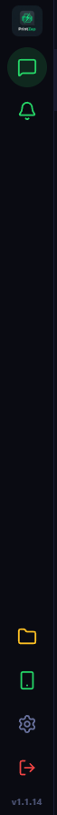
La Barra di Comando Sinistra Sempre Visibile
Posizionata sul bordo sinistro della finestra a tutta altezza, la barra laterale ti permette di navigare tra canali di ricezione, aprire l'archivio su disco e monitorare la connessione WhatsApp con un solo colpo d'occhio.
Pulsanti della Barra Laterale (Sidebar)
I comandi di sistema principali posizionati sulla barra nera a sinistra dello schermo.
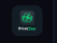
Logo Badge PrintZap
Barra Laterale In AltoIcona identificativa di PrintZap con la saetta verde. Rappresenta lo stato del software e la versione in esecuzione attiva sul computer.
Chat WhatsApp / Ordini
Barra Laterale • Canale 1Il cuore pulsante del negozio. Mostra la coda in tempo reale di tutti i file inviati dai clienti tramite WhatsApp con sessioni raggruppate per orario.
Canale E-mail (Busta)
Barra Laterale • Canale AttivoCompare sulla barra laterale sinistra appena attivi il servizio E-mail nelle Impostazioni. Scarica in automatico documenti e allegati PDF inviati dai clienti via posta elettronica ordinaria (IMAP/SMTP).
Canale Telegram (Aeroplano)
Barra Laterale • Canale AttivoCompare sulla barra laterale quando colleghi il Bot Telegram della cartoleria. Consente a studenti e clienti di inviare dispense pesanti e file di grandi dimensioni senza salvare numeri personali.
Canale Web Bancone (Mondo Viola)
Barra Laterale • Canale AttivoIcona a forma di mappamondo viola. Compare attivando il portale Web Bancone: i clienti fisicamente in negozio possono inquadrare un QR Code sul banco e caricare file dal proprio browser senza installare alcuna app.
Notifiche Sonore (Suoni)
Barra Laterale • AudioInterruttore a 1 clic per il campanello audio ("dindin" di cassa) che suona ogni volta che un cliente invia un nuovo documento da stampare.
Grigio Muto Silenzioso (ideale se ascolti musica o nei picchi).
Cartella Documenti PC
Barra Laterale In Basso
Scorciatoia globale indispensabile: apre istantaneamente la cartella principale file_da_stampare in Windows Explorer in primo piano.
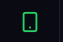
Stato Connessione & QR Code
Barra Laterale • SistemaSemaforo continuo della connessione WhatsApp Desktop. Ti informa in tempo reale se il tuo numero WhatsApp è agganciato e pronto a ricevere file.
Arancione In attesa di scansione QR Code.
Rosso Disconnesso o sessione terminata.
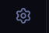
Pannello Impostazioni (⚙️)
Barra Laterale In BassoApre la finestra di configurazione centrale di PrintZap: WhatsApp, canali E-mail e Telegram, Web Bancone, stampanti predefinite, licenza e aggiornamenti.
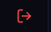
Disconnetti / Reset Sessione
Barra Laterale In FondoComando di sicurezza per disconnettere l'account WhatsApp dal software o resettare il motore del browser in caso di cali di rete internet prolungati.
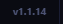
Versione Software (v1.1.14)
Fondo Barra LateraleMostra il numero di build attualmente installato e funzionante sul computer della tua cartoleria per verifiche di conformità e assistenza.
Pulsanti di Azione sull'Ordine (In Alto a Destra)
I due pulsanti più utilizzati durante la giornata lavorativa al banco per stampare e avvisare il cliente.
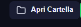
[ 📂 Apri Cartella ]
In Alto a DestraIl pulsante magico per la stampa immediata. Cliccandolo, Windows Explorer si apre in primo piano dentro la cartella nominata con il nome del cliente con tutti i file ricevuti.
[ 🖨️ Notifica Pronto ] (Verde)
In Alto a Destra • ProntoInvia all'istante il messaggio WhatsApp di cortesia al cliente: "✅ Stampa Pronta! 🖨️ Il tuo documento è pronto per il ritiro."
[ 🔁 Reinvia Notifica ] (Viola)
In Alto a Destra • CompletatoCertifica a colpo d'occhio che il lavoro è concluso e il cliente è già stato avvisato. Nessun dubbio quando il cliente entra in cartoleria!
[ 🖨️ Notifica Pronto ] (Giallo Oro)
In Alto a Destra • AggiornatoSi accende in giallo brillante quando il cliente manda un secondo documento dopo che il primo era già stato stampato (es. link Adobe o ulteriori allegati).
Pulsanti di Gestione File & Sessioni Orarie
Tutti i controlli dedicati all'apertura diretta dei documenti, alle spunte di lavorazione e all'eliminazione file.
[ ↗️ Apri File ]
Nella Card del FileApre il documento direttamente con il programma predefinito di Windows (Acrobat Reader per i PDF, Photoshop o Visualizzatore per immagini, Word per documenti .docx).
[ 🚀 Notifica Pronto Veloce ]
Header della SessionePulsantino verde a pillola presente nella barra di sessione ("Oggi alle 10:50 (1 file)"). Notifica tutti i file di quel blocco temporale in un clic.
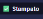
[ ☑ Stampato ]
Header Sessione & FileSpunta rapida per segnare manualmente che il foglio è uscito fisicamente dalla stampante, aggiornando il conteggio senza inviare messaggi se il cliente è già al banco.
[ 🗑️ Elimina File su Disco ]
Header SessioneCancella i file stampati dall'hard disk del computer per liberare spazio e mantenere la memoria del PC sempre leggera e veloce.
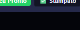
[ ⊞ Griglia | ☰ Lista ]
In Alto a Destra ContenutiCambia all'istante la modalità di visualizzazione: Griglia per grandi miniature fotografiche di poster e foto; Lista per elenchi compatti di dispense e PDF multipagina.
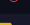
[ 🔄 Ricarica | ❌ Chiudi ]
Testata Colonna Chat
🔄 sincronizza e ricarica all'istante l'elenco dei messaggi WhatsApp; ❌ deseleziona il cliente attivo per tornare alla dashboard pulita.
Badge di Stato & Semafori Intelligenti
Le etichette cromatiche che comunicano lo stato di lavorazione di ordini e file.
[ 🟡 GIACENZA ]
Accanto al Nome ClienteSegnala che il cliente ha documenti arrivati ieri o nei giorni scorsi non ancora ritirati. Ti avvisa subito per evitare che rimangano stampe dimenticate sul banco.
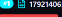
[ 🔴 DA STAMPARE ]
Sulla Scheda del FileEtichetta rossa brillante applicata a ogni nuovo file appena ricevuto su WhatsApp. Indica che il documento è in attesa di essere stampato.
[ 🟢 GIÀ STAMPATO ]
Sulla Scheda del FileEtichetta verde di completamento che certifica che la stampa è terminata e la notifica WhatsApp è stata inviata con successo.
Pannello Impostazioni & Schede di Configurazione
Tutti i 9 tab di controllo e i pulsanti della finestra di configurazione centrale di PrintZap.
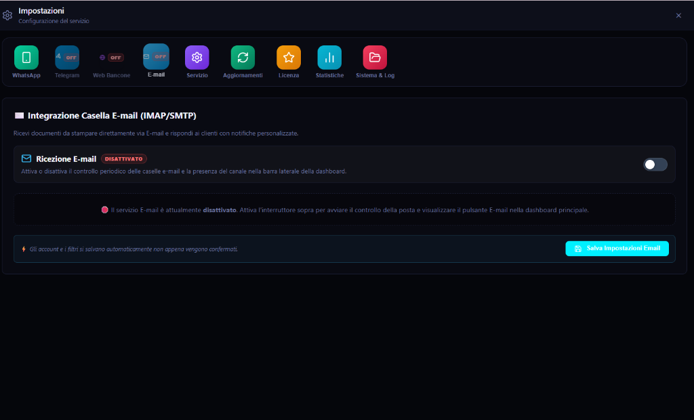
Configurazione Modulare & Multi-Canale
Accessibile cliccando l'ingranaggio ⚙️ nella barra laterale, la finestra ti permette di attivare o disattivare ogni canale di ricezione in piena autonomia con appositi interruttori ON/OFF, regolare cartelle, stampanti e verificare licenza e statistiche.
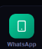
Scheda WhatsApp (Smartphone)
Pannello Impostazioni • Tab 1Gestisce la connessione con l'account WhatsApp del negozio. Permette di visualizzare il QR Code per l'aggancio, impostare i testi delle notifiche automatiche di ritiro e configurare i messaggi personalizzati.
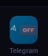
Scheda Telegram (Bot)
Pannello Impostazioni • Tab 2Configurazione del Bot Telegram del negozio. Riporta l'indicatore OFF quando il canale è inattivo e consente di inserire il Token bot per abilitare la ricezione di dispense pesanti.
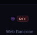
Scheda Web Bancone (Wi-Fi)
Pannello Impostazioni • Tab 3Attiva il portale di upload locale per i clienti collegati alla rete Wi-Fi del negozio. Genera la pagina di caricamento con QR Code da esporre sul bancone della cartoleria.
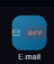
Scheda E-mail (Posta)
Pannello Impostazioni • Tab 4Integrazione della casella di posta (IMAP/SMTP). Consente di configurare l'indirizzo e-mail del negozio per ricevere allegati e confermare la ricezione ai mittenti.
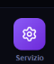
Scheda Servizio (Ingranaggio)
Pannello Impostazioni • Tab 5
Impostazioni del motore PrintZap: percorso della cartella su disco (file_da_stampare), selezione porta locale (es. porta 3000 o personalizzata), e avvio automatico all'accensione di Windows.
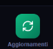
Scheda Aggiornamenti (Frecce)
Pannello Impostazioni • Tab 6Controlla in tempo reale la presenza di nuove versioni del software con 1 clic. Mostra l'elenco delle novità introdotte e consente l'aggiornamento automatico sicuro senza perdere le impostazioni.
Scheda Licenza (Stella)
Pannello Impostazioni • Tab 7Stato dell'abbonamento o prova gratuita di 30 giorni. Permette di inserire il codice licenza della tua cartoleria e visualizzare la scadenza e i dispositivi abilitati.
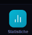
Scheda Statistiche (Grafico)
Pannello Impostazioni • Tab 8Report completo di produttività: numero totale di file stampati nel giorno, mese e anno, clienti serviti e tempi medi di lavorazione al banco.
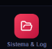
Scheda Sistema & Log (Cartella)
Pannello Impostazioni • Tab 9Registro eventi e diagnostica tecnica. Mostra lo stato dei processi in background, verifica le connessioni internet e genera il log per l'assistenza rapida in caso di anomalie di rete.
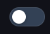
Interruttore Attiva/Disattiva
Presente in Ogni Scheda CanaleLeva on/off rapida. Quando attivata su un servizio (E-mail, Telegram, Web Bancone), accende il motore corrispondente e aggiunge immediatamente la relativa icona sulla barra laterale sinistra!
OFF Servizio a riposo + Icona nascosta per massima pulizia visiva.
[ 💾 Salva Impostazioni ]
In Basso a Destra nel ModalPulsante azzurro brillante con icona floppy disk. Salva e applica immediatamente tutti i parametri modificati senza richiedere il riavvio di PrintZap o di Windows.
[ ✕ Chiudi Finestra ]
In Alto a Destra nel ModalChiude la finestra delle impostazioni e ti riporta direttamente alla dashboard di lavoro con la coda dei file dei clienti pronti alla stampa.
Tutti i Menu Interni Spiegati Funzione per Funzione
Dalla ricezione Telegram al portale Wi-Fi con QR Code, dalla gestione temi e licenza fino al report contabile delle stampe e al backup completo.
📱 Connessione WhatsApp & Scansione QR Code
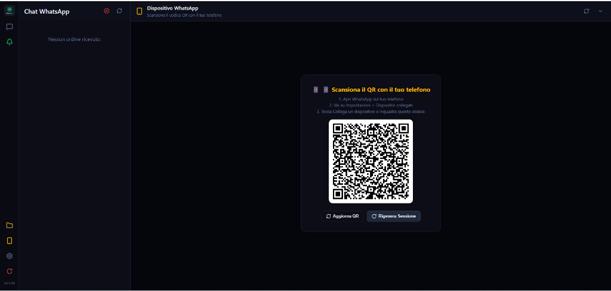
✈️ Integrazione Telegram Multi-Modalità
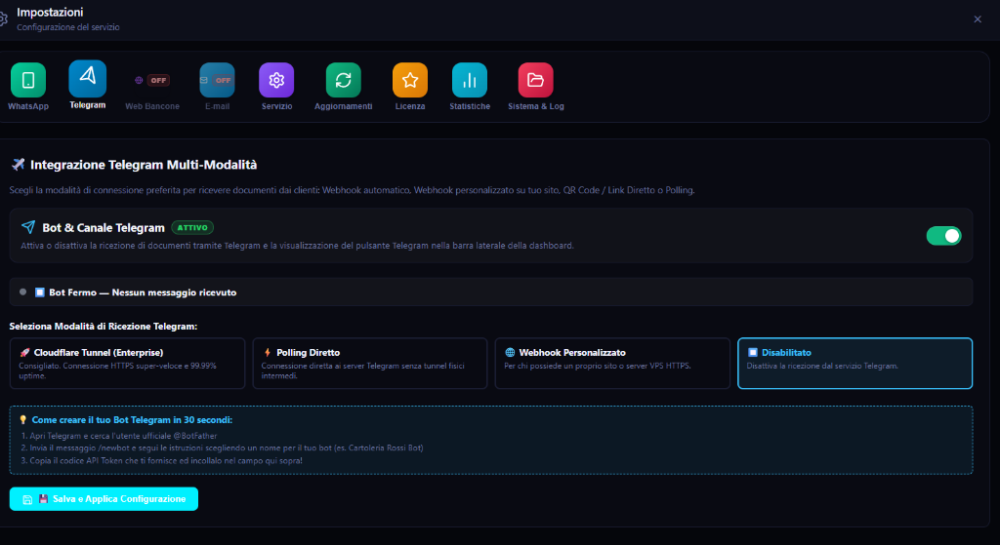
/newbot, ottieni il token API e incollalo per iniziare a ricevere dispense pesanti.🌐 Portale Web Bancone (Caricamento via QR Code)
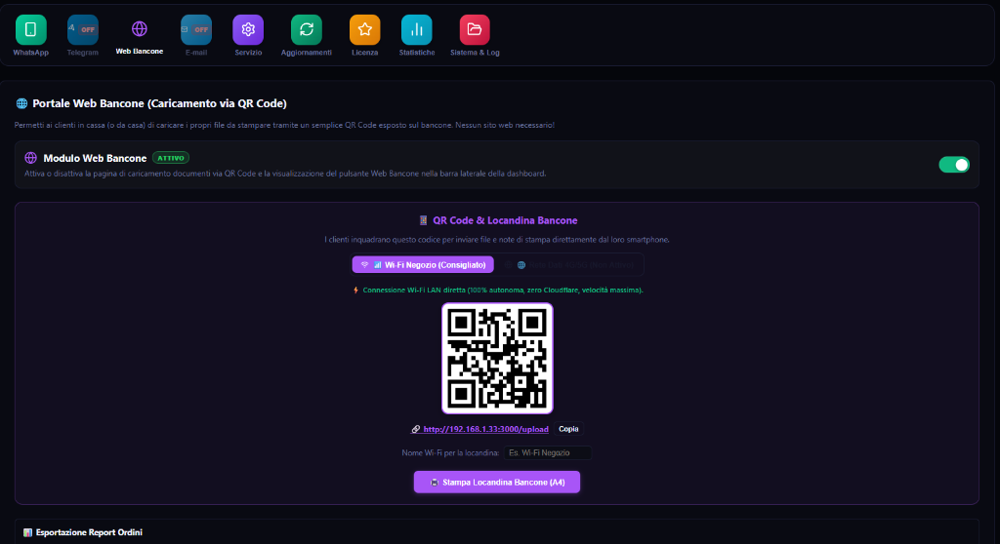
http://192.168.1.33:3000/upload) con pulsante per copiarlo e salvarlo nei preferiti.⚙️ Impostazioni Servizio, Temi & Automazioni
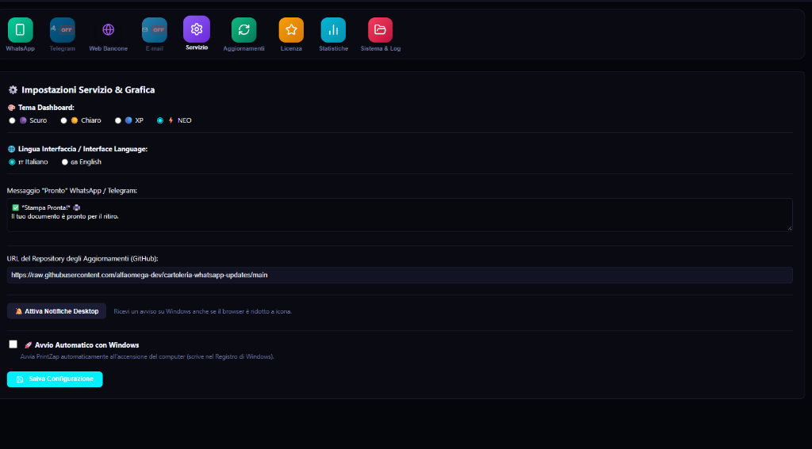
🔒 Stato Licenza, ID Macchina & Rinnovi
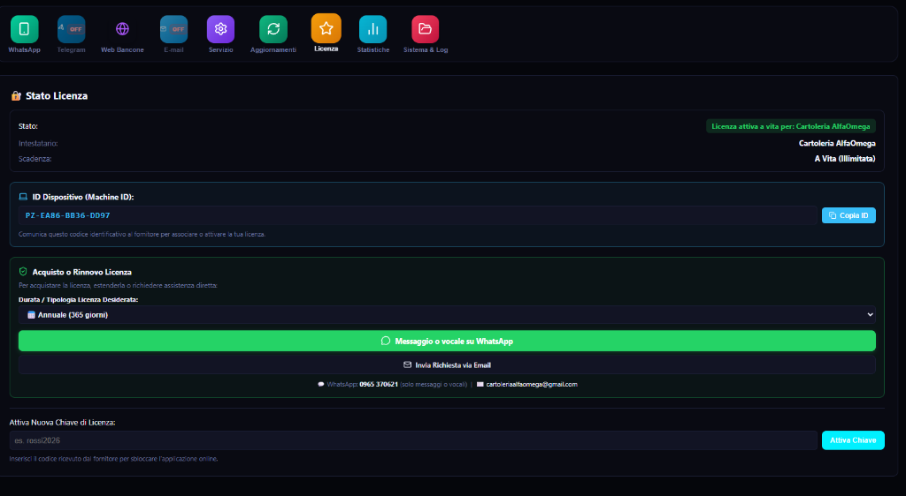
PZ-EA86-BB36-DD97) copiabile con 1 clic per associare la postazione di cassa.Attiva Chiave per abilitare la licenza online.📊 Statistiche di Produttività & Resoconto Stampa
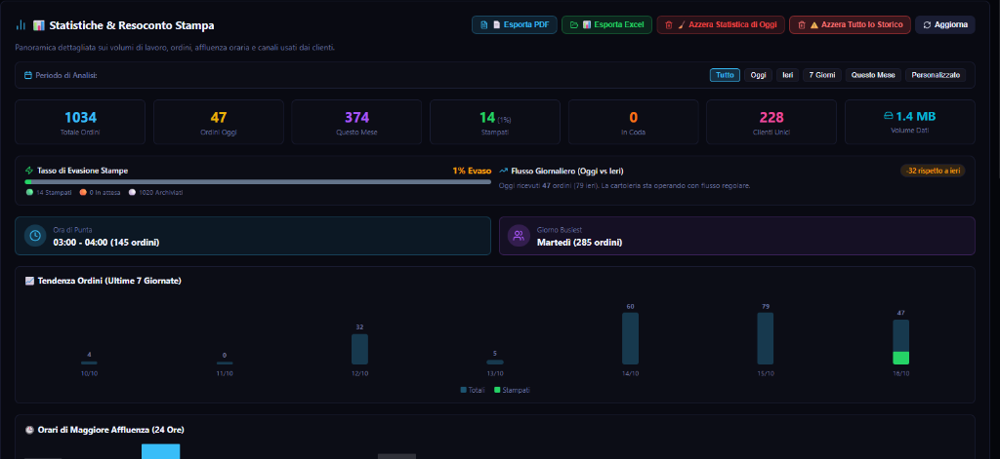
💾 Disaster Recovery, Backup & Spegnimento Pulito
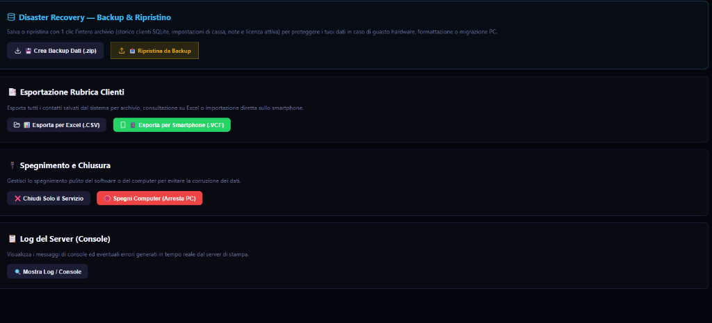
Tutti i comandi pronti all'uso sul tuo banco
Installa PrintZap e prova gratis la comodità di questa interfaccia per 30 giorni.